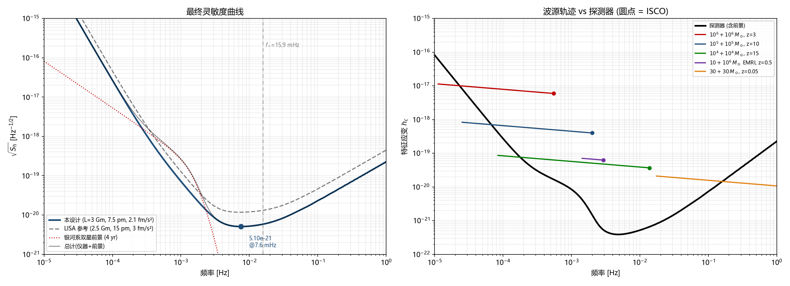
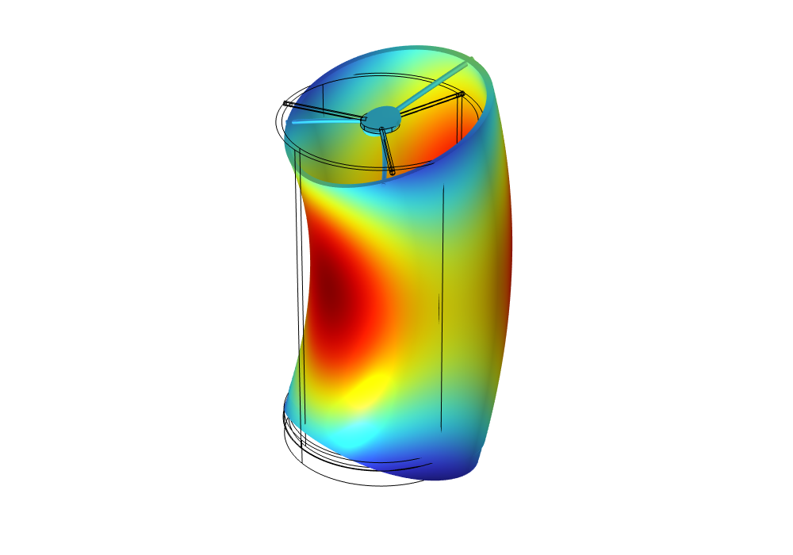

How 5.1×10-21 is made
One master equation, two budgets feeding it, and real solvers behind every allocation.
The whole design serves Sh(f) = (10/3L²) [POMS + 2(1+cos²(f/f∗)) Pacc/(2πf)4] [1+0.6(f/f∗)²]. Below a millihertz the (2πf)-4 factor means only residual force on the test mass matters — a nine-term parasitic-force budget (gas damping, charge shot noise, patch potentials, magnetics, radiometer, radiation pressure, stiffness coupling, self-gravity) closes at 2.10 fm/s²/√Hz, gated against LISA Pathfinder flight data. At high frequency the optical chain takes over: an eight-term budget closes at 7.48 pm/√Hz per link.
The allocations are not typed in — they are solved for. Zemax ray tracing confirmed the confocal-paraboloid telescope is aberration-free on axis to 1.9×10-10 waves; a COMSOL→Zemax thermo-elastic loop turned "3 pm of telescope pathlength" into material law (Zerodur survives at 220 µK/√Hz where aluminium needs an impossible 0.19 µK/√Hz); and a self-built two-beam overlap integral put the tilt-to-length coupling on a moment-integral footing, softening the alignment tolerance from 6.25 to 10.7 µm.


